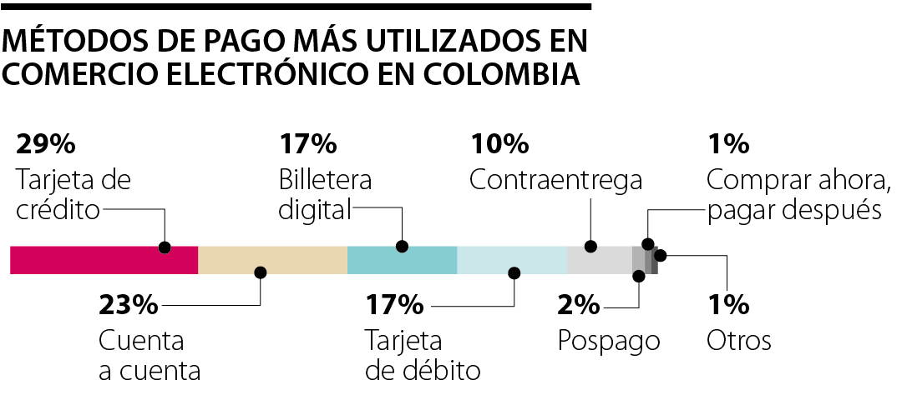
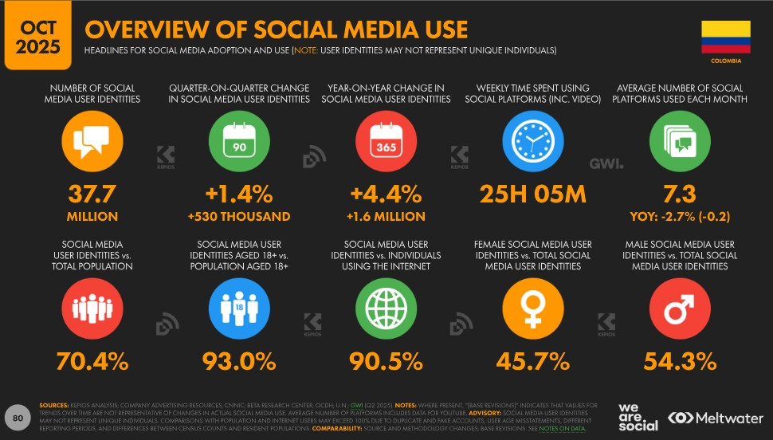

2.4.1 Delivery-App Technology as Shared Infrastructure
1. Introduction
David observes that Internet-based technology has erased traditional geographic limits on a business's market. In the QSR industry this shows up as on-demand delivery-aggregator apps — a category of technology, not any single company. It is important to be precise about what this variable is: aggregator apps are shared distribution infrastructure that any small restaurant in Bogotá plugs into on the same commission terms, the same way every restaurant uses electricity. They are not competitors, and this analysis does not benchmark against them; the real competitors are the other small, same-industry operators profiled throughout this page and in Competitive Forces, all of them sized within the same $100M COP budget range.
2. Data
Infrastructure Terms, Any Restaurant Size
Nominal commission charged per order by delivery-aggregator apps (22–34% effective, all-in), regardless of restaurant size
-
Since ~2018
Delivery-aggregator apps become standard infrastructure in Bogotá
On-demand delivery apps became the default distribution channel for independent restaurants in Bogotá over the second half of the 2010s, well before any of the small competitors profiled in this section opened.
-
Ongoing
18–30% commission applies to any restaurant, any size
Aggregators charge the same nominal commission band (22–34% effective) to a single-location independent as to a national chain — the infrastructure cost is size-neutral.
-
2026
All 3 small, budget-comparable competitors use aggregator-app technology
Every one of the three small same-industry competitors profiled in 2.4.6 lists on at least one delivery-aggregator app as a primary or secondary sales channel, confirming this is baseline infrastructure at this budget scale, not a differentiator.
Delivery-app presence at the three budget-comparable competitors
| Competitor | Delivery-App Presence |
|---|---|
| Verdadero Shawarma | Single Rappi listing at its one location; no other sales channel, so the 18–30% commission applies to effectively all of its volume. |
| El Khalifa Shawarma | Aggregator-app listing across all 4 locations, supplemented by direct phone ordering; the same commission band applies uniformly regardless of its larger footprint. |
| La Shawarmería | Aggregator-app listing at both locations, run alongside its owned Wix site — the only one of the three splitting order volume between a paid aggregator channel and an owned one. |
3. Opportunities and Threats
Opportunity
- Because aggregator-app infrastructure is available to any restaurant on the same terms, a brand-new, single-location entrant can reach the same city-wide delivery audience as an established small competitor from its very first day, without building its own delivery fleet.
4. Analysis
Treating delivery-app technology as infrastructure rather than competition changes the strategic question for a new entrant: it is not "how does a small operator compete with the platform," it is "how does it compete with the other small, same-industry restaurants standing next to it on the same app." Since the 18–30% commission is a fixed cost every comparable competitor also pays, it cannot be a source of advantage — the real competitive lever is quality, speed and price relative to those other small operators, not the technology itself.
Listing on more than one aggregator app costs little beyond the commission itself, so the practical decision for a new entrant is not which single app to join but how to sequence multi-app listing against the operational capacity (2.4.3, 2.4.5) needed to fulfil orders from several channels at once without degrading speed or consistency — since a slow response on any one listing directly damages the rating that the next customer sees.
5. Bibliography
2.4.2 Digital Payments and POS
1. Introduction
Point-of-sale technology is a low-cost, high-leverage technological variable for a small service business: unlike kitchen equipment, a cloud POS system scales down to a single-location budget without losing the core functionality larger chains use.
2. Data
Digital Payment Adoption in Colombia
Superintendencia Financiera / Banca de las Oportunidades — share of adults with an active financial product (a broader indicator than digital-payment use specifically); the 76% figure comes from a secondary source without a confirmed date or methodology

-
Dec 2020
72.6% active use of financial products
Superfinanciera/Banca de las Oportunidades financial-inclusion data showed 72.6% of adults with an active financial product by the end of 2020 — a broader indicator of financial-system engagement, not a digital-payments-specific figure.
-
2023
~27 million digital-payment users nationally
Colombia's fintech ecosystem expanded more than 380% between 2017 and 2023.
-
2026
~76% reported preference for digital payments (unverified)
A secondary-source estimate puts digital-payment preference at 76%, led by high-penetration wallets Nequi and Daviplata, QR codes and instant transfers — though the figure lacks a confirmed date and methodology, and may be conflated with the Global Payments Report's 76% figure for in-store mobile/QR payments specifically.
Digital payment rails used in the Colombian QSR market
| Rail | Relevance to a Small Operator |
|---|---|
| Nequi / Daviplata | High-penetration digital wallets; customers expect them as a default option at checkout. |
| QR codes | Low-cost, no-hardware acceptance method suited to a counter-format store. |
| Card terminals | Still required for card-present transactions; integrates with cloud POS for real-time reconciliation. |
| DIAN electronic invoicing | Mandatory regardless of payment rail; cloud POS automates this requirement. |
Payment technology observed at the three budget-comparable competitors
| Competitor | Payment Channel Observed |
|---|---|
| Verdadero Shawarma | Aggregator app only — payment is processed entirely inside the delivery-app listing; no independently branded POS or payment terminal is publicly visible. |
| El Khalifa Shawarma | Aggregator app plus direct phone ordering across its 4 locations; no publicly visible payment-brand signage or owned digital checkout. |
| La Shawarmería | Aggregator app plus its owned Wix site, but the site itself routes orders to a phone number rather than an online checkout — its owned channel currently captures discovery, not digital payment. |
3. Opportunities and Threats
Opportunity
- With 72.6% of adults already actively using a financial product in 2020, and digital-payment preference reported around 76% by 2026, a new store can launch cash-light and digital-first on a single affordable cloud-POS subscription instead of building cash-handling processes it would later have to phase out.
4. Analysis
Unlike kitchen automation or delivery-app technology, POS technology is one of the few technological variables where a modest budget buys essentially the same capability a large chain has, because cloud POS is priced per terminal, not per enterprise. Given the steady, multi-year rise in digital-payment adoption, this is a low-risk, high-value first technology investment for any new entrant in this category.
The four rails above are not alternatives to choose between but a stack that a single cloud POS should unify: a customer who wants to pay by wallet, QR or card should all reconcile into the same real-time inventory and DIAN-invoicing pipeline, so the selection criterion for a POS vendor is integration breadth across these rails, not just the cheapest per-terminal price.
None of the three budget-comparable competitors exposes a digital-payment rail independent of the aggregator app itself — even La Shawarmería's owned site stops at a phone-call checkout. A cloud POS that unifies wallet, QR and card acceptance directly on an owned channel would therefore be a real point of differentiation against all three, not just a defensive purchase.
5. Bibliography
2.4.3 Automation and Kitchen Equipment
1. Introduction
Kitchen automation is the technological variable most directly constrained by a small operator's launch budget, since specialized equipment (30% of the $100M COP structure referenced in Competitive Forces 2.6.2) is the single largest technology line item before opening.
2. Data
-
At launch
Digitally controlled vertical rotisserie
Automated vertical roasters with digital temperature control and continuous self-basting rotation ensure even cooking and reduce staff supervision effort.
-
At launch
Programmable fryers and Kitchen Display Systems (KDS)
Digital fryer control panels eliminate human variability in cook times, while a KDS replaces paper tickets with color-coded, real-time order sequencing across dine-in, kiosk and delivery channels.
Core kitchen automation for a döner-style operator
| Equipment | Function |
|---|---|
| Digital vertical rotisserie | Continuous self-basting rotation, digital temperature control, high-efficiency thermal insulation; produces the core product. |
| Programmable fryer | Precise temperature profiles and automatic basket-lift cycles; eliminates human variability in cook times. |
| Kitchen Display System (KDS) | Replaces paper tickets; color-coded, real-time order sequencing across dine-in, kiosk and delivery. |
Public evidence of kitchen automation at the three budget-comparable competitors
| Competitor | Public Equipment/Automation Evidence |
|---|---|
| Verdadero Shawarma | None publicly documented; its single-location aggregator listing shows no kitchen-technology marketing. |
| El Khalifa Shawarma | None publicly documented across any of its 4 locations, despite operating since 1983 — four decades of scale have not translated into published kitchen-technology investment. |
| La Shawarmería | None publicly documented on its owned website or delivery-app listing. |
3. Opportunities and Threats
Opportunity
- Digitally controlled rotisseries, fryers and a KDS let a brand-new operation deliver the consistent quality and speed of an established small competitor from its very first day, without years of manual-process fine-tuning.
4. Analysis
Because high-efficiency vertical rotisseries are largely import-dependent (Competitive Forces 2.6.4), this equipment carries longer lead times and higher upfront capital needs than locally sourced alternatives — but within a modest launch budget, it remains the single highest-leverage automation purchase for any döner-style operator, since it is the one piece of equipment that directly produces the industry's core product.
The three equipment categories above have different acquisition risk profiles: the rotisserie is the long-lead-time, high-capital item that should be ordered first given import dependency, while the fryer and KDS are comparatively commoditized and locally available, so sequencing procurement around the rotisserie's lead time — rather than the reverse — determines how quickly a new location can actually open.
The absence of public equipment evidence across all three competitors is itself a finding, not a research gap: kitchen automation sits behind the counter, so unlike delivery-app presence (2.4.1) or social-media following (2.4.4), none of the three has a reason to publicize it even where it may exist internally. That is consistent with the 2.4.6 finding that all three peers' verifiable technology investment stops at the customer-facing layer, leaving digitally controlled equipment an available, unproven point of operational differentiation for a new entrant.
5. Bibliography
2.4.4 Own Digital Presence: App/Web Ordering and Social Media
1. Introduction
Of the three small, budget-comparable competitors profiled throughout this page (2.4.6), one already operates its own ordering website alongside a delivery-app listing and another has built a large organic social following instead — proving an owned digital channel is realistic at this budget scale, not just a large-chain feature.
2. Data
Why Build an Owned Channel
Aggregator commission avoided by routing orders through an owned app/website

-
Current
Owned channels avoid the 18–30% aggregator commission
A proprietary ordering site or simple WhatsApp/QR ordering link lets an operator keep the full margin on that order and own the customer's contact data directly.
-
Current
Instagram/TikTok drive discovery for the 25–34 segment
Short-form video and geolocation content remain the primary low-cost discovery channel for young, urban consumers in this category.
Owned-channel components at small-business scale
| Component | Role |
|---|---|
| Owned ordering site/link | Captures full margin, avoids the 18–30% commission, and owns customer contact data directly. |
| Instagram / TikTok | Primary low-cost discovery channel for the 25–34 segment via short-form video and geolocation content. |
| WhatsApp/QR ordering | Low-build-cost entry point to an owned channel, requiring no custom app development. |
Own digital presence observed at the three budget-comparable competitors
| Competitor | Own Digital Presence |
|---|---|
| Verdadero Shawarma | None beyond its aggregator-app listing; no owned website or notable social-media following found. |
| El Khalifa Shawarma | 37K Instagram followers built organically since 1983; no owned ordering website. |
| La Shawarmería | Owned Wix ordering site alongside its aggregator-app listing — the only one of the three with a channel outside the aggregator ecosystem. |
3. Opportunities and Threats
Threat
- An unknown new brand cannot skip delivery-app listings early on for customer acquisition, which delays how soon it can capture the full margin of an owned channel — even though a peer-scale competitor already proves the owned-channel path is reachable.
4. Analysis
The realistic sequencing for a new entrant is to launch on a delivery-app listing for discovery, then build an owned WhatsApp/QR ordering link once a repeat-customer base exists — mirroring exactly the path the small competitor in 2.4.6 with an owned website already took at a comparable scale, rather than trying to skip the aggregator-dependent phase altogether.
Of the three components above, the WhatsApp/QR link is the lowest-cost entry point precisely because it requires no custom app development, which makes it the natural first owned-channel investment once aggregator-driven demand is stable enough to justify diverting any order volume away from the 18–30% commission structure covered in 2.4.1.
5. Bibliography
2.4.5 Digital Traceability and Food Safety
1. Introduction
This variable connects directly to Legal Forces 2.3.2: roughly 40% of small fast-food establishments fail temperature record-keeping during INVIMA inspections. Digital traceability tools exist specifically to close that gap at small-business cost.
2. Data
Cold Chain Monitored by IoT Sensors
Maximum refrigeration temperature
Maximum freezing temperature
-
At launch
IoT sensors replace manual cold-chain logs
Wireless sensors monitor cold rooms in real time (≤4°C refrigeration, ≤-18°C freezing) and alert staff automatically on any thermal fluctuation.
-
At launch
Digital HACCP and ERP replace paperwork
Digital HACCP platforms automate temperature and cleaning records for INVIMA audits, while ERP inventory software enforces FIFO to reduce waste.
Digital traceability tools mapped to the GMP compliance gap
| Tool | Compliance Gap It Addresses |
|---|---|
| IoT cold-chain sensors | ~40% of small establishments fail temperature record-keeping (Legal Forces 2.3.2); sensors log automatically and alert on deviation. |
| Digital HACCP platform | Automates the hazard-analysis documentation INVIMA inspects for, replacing manual paperwork. |
| ERP inventory (FIFO) | Reduces food waste and expiration-related violations through automated stock rotation. |
Public evidence of food-safety technology at the three budget-comparable competitors
| Competitor | Public Food-Safety Technology Evidence |
|---|---|
| Verdadero Shawarma | None publicly documented; no certification badge or digital HACCP reference on its listing. |
| El Khalifa Shawarma | None publicly documented across its 4 locations or social channels. |
| La Shawarmería | None publicly documented on its owned site or listing. |
3. Opportunities and Threats
Opportunity
- IoT cold-chain sensors and digital HACCP records directly counter the ~40% inspection-failure rate on temperature record-keeping seen among small competitors (Legal Forces 2.3.2), turning a compliance requirement into a competitive edge during inspections.
4. Analysis
Because this technology directly offsets a documented weakness among small competitors rather than a hypothetical one, it is one of the few technology purchases with a measurable, inspection-linked return, and should be prioritized within any operator's working-capital allocation alongside the mandatory GMP infrastructure from Legal Forces.
Each tool in the table above maps to a specific, already-documented failure mode rather than a generic risk, which is what makes this technology purchase unusually easy to justify against a fixed budget: the return is not speculative brand differentiation but a direct reduction in the probability of the food seizures and temporary closures described under Legal Forces 2.3.2.
Small operators at this budget scale do not publicly disclose food-safety technology, which is expected since it is a back-of-house compliance tool rather than a marketing asset. But the absence of any visible certification or traceability claim across all three peers means none has turned GMP/HACCP compliance into a customer-facing trust signal — leaving that specific positioning fully open to a new entrant that does.
5. Bibliography
2.4.6 Technology Profile of Three Small, Budget-Comparable Competitors
1. Introduction
The professor's feedback specifically asked for competitors sized to a small operator's own $100M COP budget — not billion-dollar national platforms, which are outside this business's actual competitive set and are treated purely as shared infrastructure (2.4.1). These three independent shawarma/kebab operators — distinct from the three profiled in Competitive Forces 2.5, and each well under the $100M COP scale — are the right peer set: each is a small, Bogotá-based, same-industry, single-to-few-location business, and each has made a different technology choice with the resources available at this scale.
2. Data
Verdadero Shawarma
Delivery-app rating, 22+ reviews in the last 90 days — single location, aggregator-listing only
El Khalifa Shawarma
Instagram followers across 4 small Bogotá locations, built since 1983
La Shawarmería
Locations, plus an owned ordering website alongside a delivery-app listing
-
Since 1983
El Khalifa Shawarma — social-media-led small chain
Operating since 1983, expanding gradually to several small locations — a 2026 check of its own contact channels found La Candelaria, Bulevar Niza, and Teusaquillo, which may differ from the original source's list (Usaquén, Suba, Barrios Unidos, Teusaquillo) as the chain's footprint has evidently changed over time. Its main technology asset is not a platform but an organic Instagram following of 37K, built over decades — brand equity substituting for paid digital infrastructure.
-
Current
Verdadero Shawarma — aggregator-listing only, no owned channel
Single location at Cra. 14b #161-54, Bogotá. Distributes exclusively through a delivery-aggregator listing, holding a 4.6/5 rating from 22+ reviews in the last 90 days. No evidence of an owned app, website, or POS beyond that listing.
-
Current
La Shawarmería — small operator with an owned channel
2 locations in northern Bogotá (Cl. 181c #11-56 and Calle 145A #49-16). Alongside a delivery-app listing, it runs its own ordering website (Wix-based), showing that even a 2-location, budget-scale operator can stand up a direct channel without enterprise software spend.
Side-by-side technology comparison
| Competitor | Locations | Primary Channel | Core Tech Asset |
|---|---|---|---|
| Verdadero Shawarma | 1 | Delivery-app listing only | None beyond aggregator listing (4.6★) |
| El Khalifa Shawarma | 4 | Organic social + delivery-app listing | 37K Instagram followers, built since 1983 |
| La Shawarmería | 2 | Owned website + delivery-app listing | Wix-based direct ordering site |
3. Opportunities and Threats
Opportunity
- None of the three uses a cloud POS, digital HACCP system, or KDS — their technology investment stops at the customer-facing layer (listing, social, or a basic website). A new entrant that also gets the operational layer right (2.4.2, 2.4.3, 2.4.5) can out-execute all three on consistency and speed without matching El Khalifa's decades of brand-building.
4. Analysis
The three competitors map three realistic technology postures at this budget scale: minimal (Verdadero Shawarma), brand-led (El Khalifa), and channel-led (La Shawarmería). None combines all of the customer-facing, payment, kitchen, and compliance technology layers this page covers — which means the opportunity for a new entrant is not to out-spend them (impossible against El Khalifa's decade-plus head start) but to be the first in this specific peer group to integrate all five layers at once, since a $100M COP budget is enough to cover cloud POS, digital HACCP and an owned ordering link simultaneously, which none of the three currently does.
Reading the table left to right also shows a progression: more locations correlate with a more developed channel strategy (Verdadero Shawarma's single site relies on a delivery-app listing alone, while La Shawarmería's two sites already support an owned channel). That correlation suggests channel investment follows scale rather than preceding it in this peer group — which is exactly the assumption a new entrant should challenge by building the operational and channel layers together from a single first location, rather than waiting to expand before investing in technology.